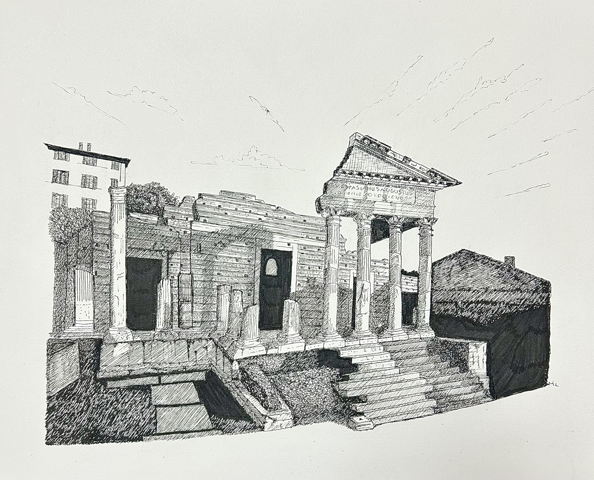

Il Capitolium rappresenta il più importante tempio dell'antica Brixia romana ed è parte del sito archeologico riconosciuto Patrimonio Mondiale UNESCO. Il disegno interpreta la monumentalità dell'edificio attraverso un segno preciso e rigoroso, capace di valorizzarne l'armonia classica.